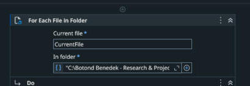
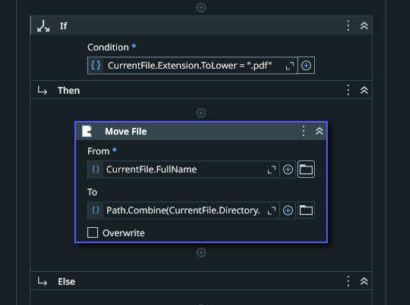
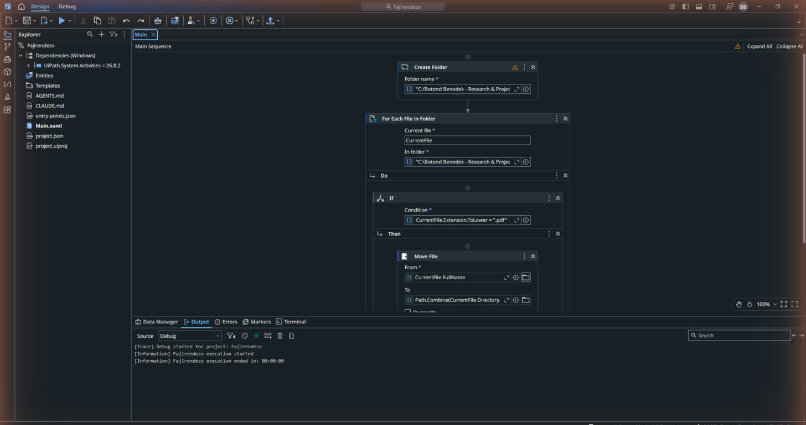
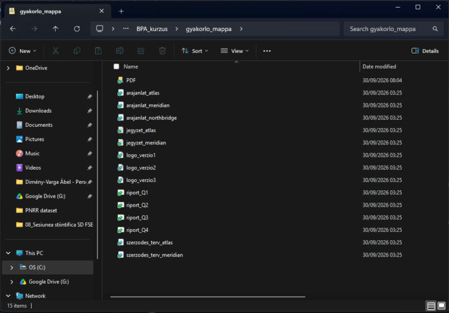
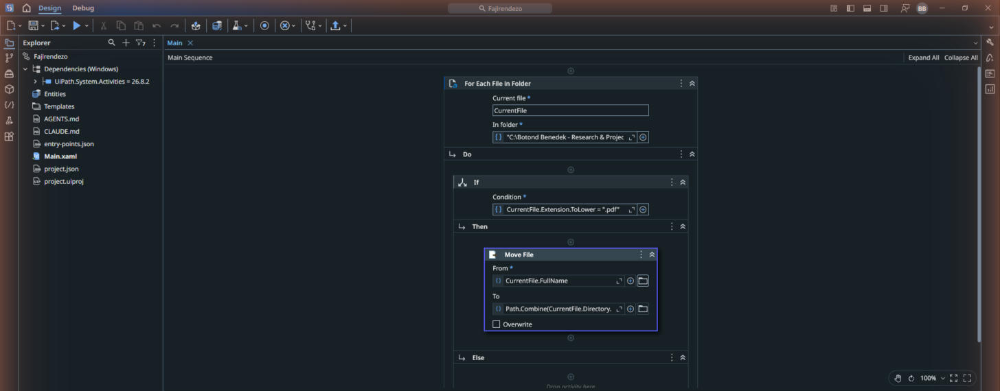

Ciklus és feltétel: a mapparendező robot
For Each File + If + Move File: a robotod 20 vegyes fájlt válogat szét almappákba, és megtanulod a két legfontosabb építőkockát.
- a robotod egy rendetlen mappát fájltípus szerint almappákba rendez;
- használtad a For Each File és az If építőkockákat: ciklus és feltétel;
- ez az első robotod, ami fájlokkal dolgozik képernyő-kattintás nélkül.
A letöltések-mappa, amit mind ismerünk
Töltsd le és csomagold ki a gyakorlómappát (20 vegyes fájl: számlák, riportok, képek, jegyzetek), mondjuk az Asztalra:
- Új projekt: Process, név: Fajlrendezo.
- Add hozzá a For Each File in Folder aktivitást. In folder: a kicsomagolt gyakorlómappa teljes útvonala. Include subfolders: kikapcsolva, szűrő: minden fájl (
*vagy*.*a felület szerint). Az Item name legyenCurrentFile. A ciklus így csak a felső mappa fájljait dolgozza fel, a már rendezett almappákat nem.
A For Each File in Folder kártya a gyakorlómappával - A ciklus elé tegyél három Create Folder aktivitást, a gyakorlómappán belüli
PDF,ExcelésWordalmappákhoz. Példa:"C:\Users\Te\Desktop\gyakorlo_mappa\PDF". Mindhárom célmappa előre készüljön el. A már létező mappa létrehozása nem törli a tartalmát. - A cikluson belülre add hozzá: If. Feltétele (Condition):
CurrentFile.Extension.ToLower = ".pdf" - Az If Then ágába tegyél Move File aktivitást. From:
CurrentFile.FullName. To:System.IO.Path.Combine("C:\Users\Te\Desktop\gyakorlo_mappa", "PDF", CurrentFile.Name). A példa első útvonalát cseréld a saját gyakorlómappádra. A cél teljes fájlútvonal, benne az eredeti fájlnévvel. A forrásfájlt áthelyezzük, nem másoljuk.
Az If feltétele és a Then ágban a kitöltött Move File - Futtasd, és nézd meg a mappát: a PDF-ek átköltöztek a PDF almappába.

Futtatás a Studióban 
A gyakorlómappa a futás után: a 6 PDF a PDF almappában - Bővítsd ugyanígy két szabállyal:
.xlsxaz Excel almappába,.docxa Word almappába (legegyszerűbb egymás után három If-et tenni a ciklusba).
Három almappa készül: PDF → 6 fájl, Excel → 4 fájl, Word → 5 fájl. A felső mappában 3 PNG és 2 TXT marad. A teljes fájlszám továbbra is 20: az almappák nem számítanak fájlnak.
Ha mást látsz: file already exists esetén a célban már van azonos nevű fájl. Egy új próba előtt töröld a teljes gyakorlómásolatot, és bontsd ki újra az eredeti ZIP-et. Ne egyesítsd az új kibontást a korábban rendezett mappával. A gyakorlat kizárólag a kapott mintamappával dolgozzon.

Hozd létre a Kepek almappát is a ciklus előtt, majd adj hozzá negyedik feltételt: CurrentFile.Extension.ToLower() = ".png". A Then ág Move File célja a Kepek almappa és az eredeti fájlnév legyen. Így 3 kép kerül oda, felül csak 2 TXT marad. Futtasd kétszer: a második futás semmit nem mozgat, ha az Include subfolders ki van kapcsolva. Ebben a feladatban ezt nevezzük idempotens viselkedésnek.
- A Move File "Could not find a part of the path" hibát dob: a PDF almappa nem létezik; a Create Folder lépés maradt ki, vagy elgépelted az útvonalat.
- Nagybetűs kiterjesztés (.PDF): ezért van a feltételben a .ToLower; ha lemarad, a robot átugorja ezeket a fájlokat.
- A Move File a megfelelő If Then ágában, az If pedig a ciklus testében legyen. A cikluson kívül a CurrentFile hatóköre nem biztosított; a Studio ezt hibával jelezheti.
- A gyakorlómappát a zipből nem csomagoltad ki, és a robot a zipen belül próbál dolgozni: előbb Extract all.
- Bejövő számlák szétválogatása lejárat vagy partner szerint.
- Havi zárásnál a riportfájlok archiválása dátumozott mappákba.
- A hetedik napon ugyanez a ciklus + feltétel páros dolgozza fel a számla-PDF-eket.